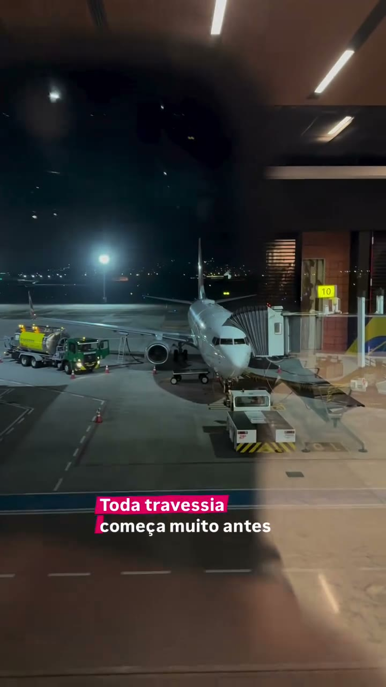
Um plano real pra sua travessia até a Austrália.
Do planejamento no Brasil até a vida construída aqui: conhecimento, comunidade e o método Líder de Travessias aplicado ao seu momento.
Quero construir meu caminho na AustráliaPra quem ainda está no Brasil, pra quem já chegou e pra quem decidiu ficar.
Antes de continuar, olhe pros números
Alguns números da Austrália em 2026
*Dados oficiais australianos, 2026: Fair Work Ombudsman e ABS. Valores e condições variam conforme vínculo, ocupação, award, experiência e elegibilidade. Conversão em reais convertidos com cotação de referência de 30/09/2026 (AUD 1 = R$ 3,60); atualiza sozinha se a cotação ao vivo carregar.
Tem oportunidade na Austrália. Mas quem chega sem plano costuma gastar tempo e dinheiro antes de encontrá-la.
Chegar à Austrália é a parte fácil. O difícil é saber o que fazer depois.
- "Qual visto?"
- "Como me preparo?"
- "Cheguei. E agora?"
- "Onde estão as oportunidades?"
- "Como renovo?"
- "Como faço as conexões certas?"
- "Como construo um caminho de longo prazo?"
Cada decisão errada custa tempo e dinheiro.
Brasil x Austrália
Mudar de país muda o que você pode ganhar e construir.
BR BRASIL
AU AUSTRÁLIA
Dados brasileiros: Agência Brasil / IBGE (salário mínimo 2026) e IBGE/PNAD Contínua (rendimento médio real habitual, 1º tri/2026). Dados australianos: Fair Work Commission e ABS, valores semanais oficiais convertidos para base mensal (semana × 52 ÷ 12), pra comparar na mesma unidade que o brasileiro usa no dia a dia. As barras comparam escala em cada moeda local, não poder de compra equivalente; o valor em reais ao lado do AUD é só uma referência de conversão, cotação de 30/09/2026 (AUD 1 = R$ 3,60), atualiza sozinha se a cotação ao vivo carregar.
A oportunidade existe, e quem se prepara melhor aproveita mais.
Muita gente chega sonhando e acaba improvisando.
Você não precisa descobrir a Austrália sozinho.
O método por trás do ecossistema
Líder de Travessias
Toda travessia — pra Austrália, pra outro país, ou pra qualquer mudança grande de vida — passa pelos mesmos cinco movimentos.
Identidade
Entender quem você é e o que busca de verdade nessa travessia.
Estratégia
Um plano real pro seu objetivo, não uma fórmula genérica.
Execução
Colocar o plano em prática com direção e acompanhamento.
Resultado
Medir o que avançou de verdade, não só o que parecia avançar.
Autoridade
Virar referência pra quem vem atravessando o mesmo caminho depois de você.
A diferença entre tentar e ter um plano.
Sem o ecossistema
- Dúvida: "será que estou escolhendo certo?"
- Google + grupos + vídeos
- Informação desencontrada
- Tentativa e erro
- Anos construindo contatos
- "E agora?"
Com o ecossistema
- Diagnóstico
- Plano
- Caminho das pedras
- Mentoria
- Especialistas
- Conexões
- Próximo passo claro
Quem está por trás do ecossistema
Marcelo aprendeu a Austrália morando nela.
- Deixou uma carreira estável no Brasil
- Foi pra Austrália com a família e um filho pequeno
- Trocou um salário de R$ 30 mil por AUD 400 por semana
- Recomeçou num país onde não conhecia ninguém
- Foi montando a rede de contatos aos poucos
- Aprendeu o mercado por dentro
Hoje, Marcelo é sócio da Expert Education e atua diretamente no mercado de educação internacional.
Ele levou anos pra construir o acesso que agora você pode encontrar em um único lugar.
Quero construir meu caminho na AustráliaAlém de descobrir o caminho, você terá quem ajude a percorrê-lo.
O Austrália Sem Fronteiras te prepara. Na hora de estudar, aplicar e renovar o visto, a Expert Education assume o processo.
Austrália Sem Fronteiras
Clareza para saber para onde ir.
Mentorias • Planejamento • Mentalidade • Carreira • Networking • Oportunidades
Estrutura para saber como chegar.
Educação • Escolas e universidades • Aplicações • Vistos • Renovações • Suporte especializado
Do plano à execução.
O plano vem com gente pra executar junto.
Quer ir para a Austrália?
Você se prepara.
Precisa escolher o melhor caminho?
Você encontra direção.
Chegou a hora de estudar e aplicar?
A Expert entra em campo.
Precisa renovar seu visto?
A Expert orienta o processo.
Seu objetivo é construir uma vida de longo prazo na Austrália?
Profissionais especializados avaliam os caminhos possíveis pro seu caso.
Você muda de fase e o ecossistema continua junto.
Quem está por trás tem mais de 23 anos de mercado.
O ecossistema tem a estrutura da Expert Education & Visa Services, agência de educação internacional que apoia estudantes brasileiros na Austrália.
*Expert Education & Visa Services, fundada em 2003. Mais de 200 mil vistos aprovados desde a fundação.
Marcelo Lusardo é sócio dessa operação.
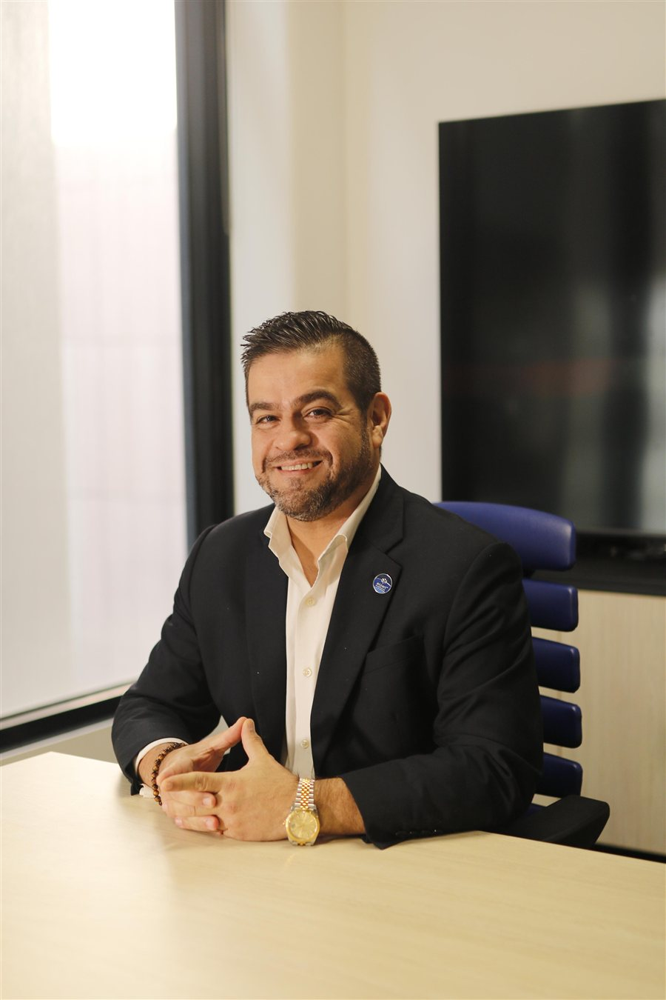
Mentoria com Marcelo
Ele vai ajudar você a enxergar o seu próprio caminho.
Marcelo já fez essa travessia. Hoje, como sócio da Expert Education, trabalha todo dia com o mercado que leva brasileiros pra Austrália, e usa isso pra orientar quem está começando ou não sabe qual é o próximo passo.
Você não precisa gastar os anos que ele gastou pra descobrir o caminho.
Quero construir meu caminho na AustráliaAntes de virar ecossistema, foi um livro
Marcelo escreveu um livro sobre essa travessia.
Em Do Zero à Residência, Marcelo Lusardo conta a própria travessia, sem filtro e sem fórmula pronta.
"Você não precisa de respostas. Precisa atravessar."
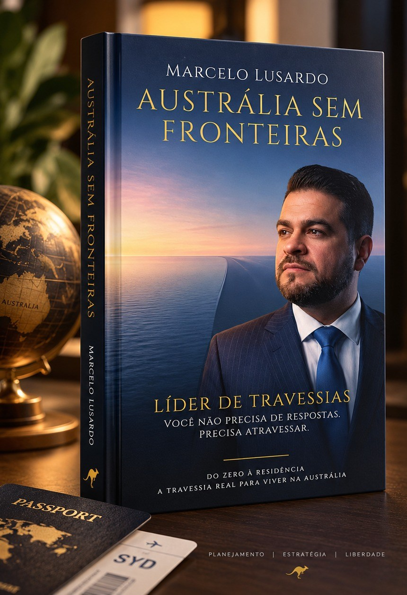
Austrália Sem Fronteiras
O livro deu origem ao movimento
Membros do ecossistema recebem uma edição autografada.
Todo o recurso da venda do livro é doado pra obras de caridade.
Acesso anual
R$ 1.030,00
Quero fazer parte agoraPrefere comprar só o livro, sem o ecossistema?
Certificação
Formado pelo IBC, o Instituto Brasileiro de Coaching.
Marcelo é Master Coach certificado pelo IBC, com formações complementares em Business & Executive Coaching, Professional & Self Coaching e Análise Comportamental. São mais de 500 horas de coaching desde 2010, credenciadas por entidades internacionais como European Coaching Association, Global Coaching Community e International Association of Coaching.
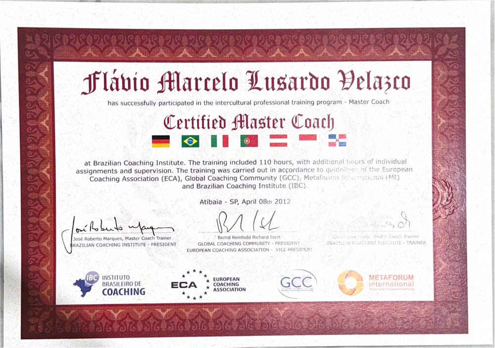
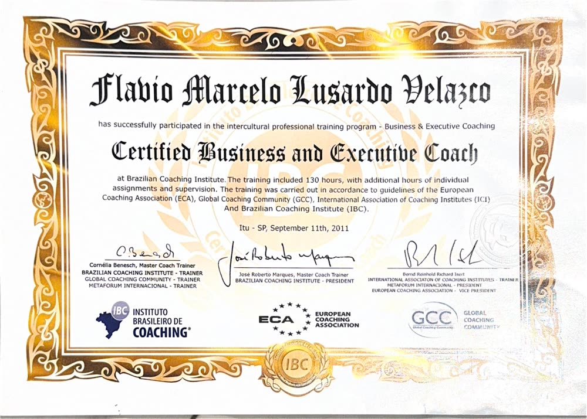
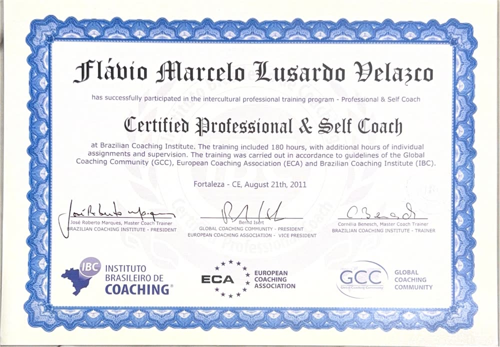
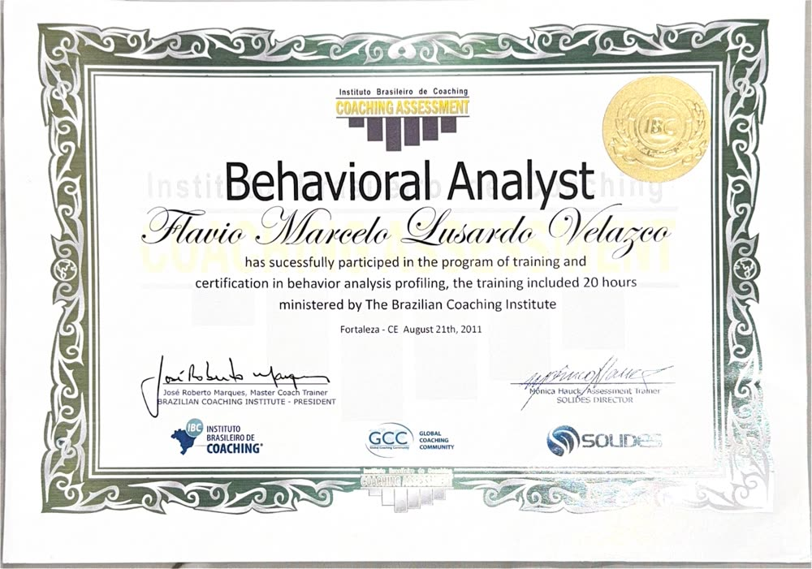
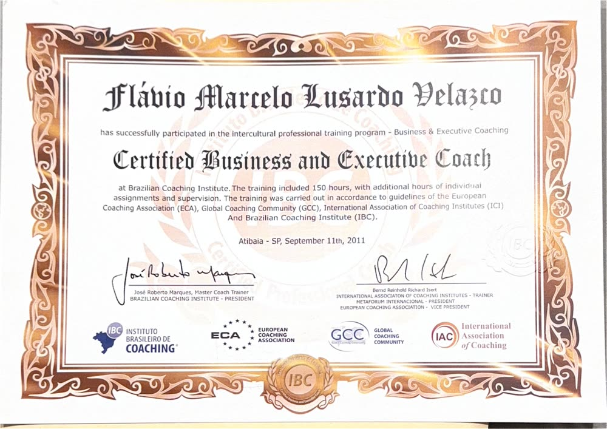
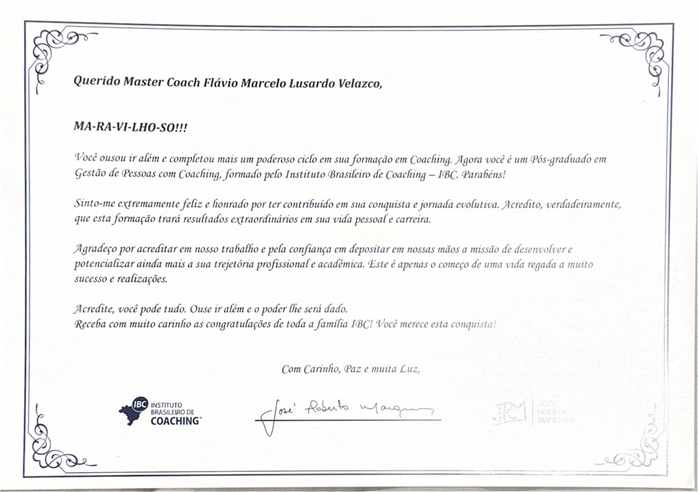
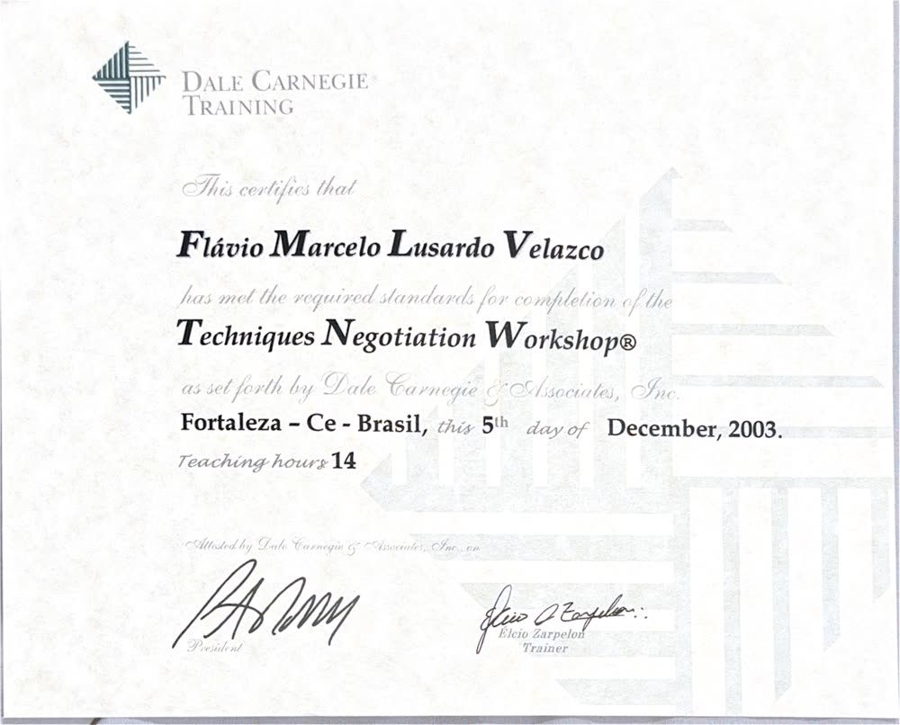
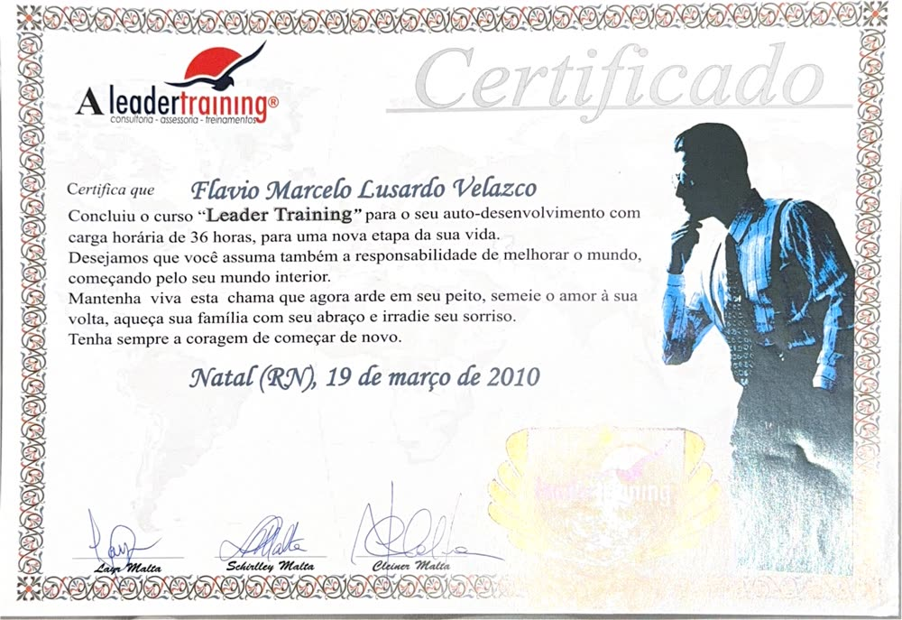
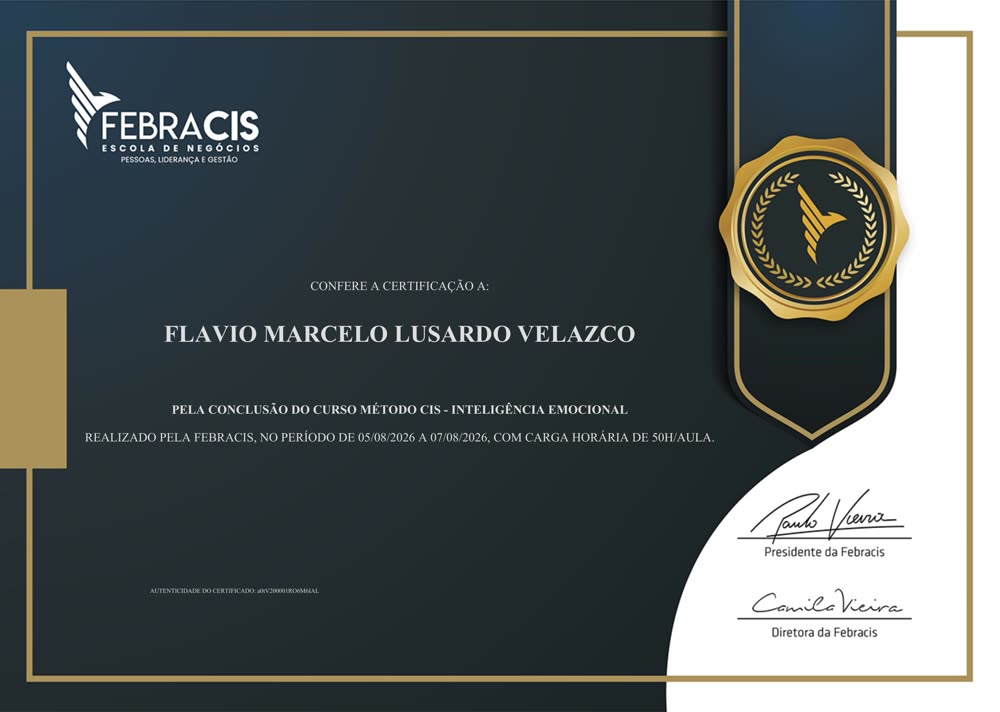
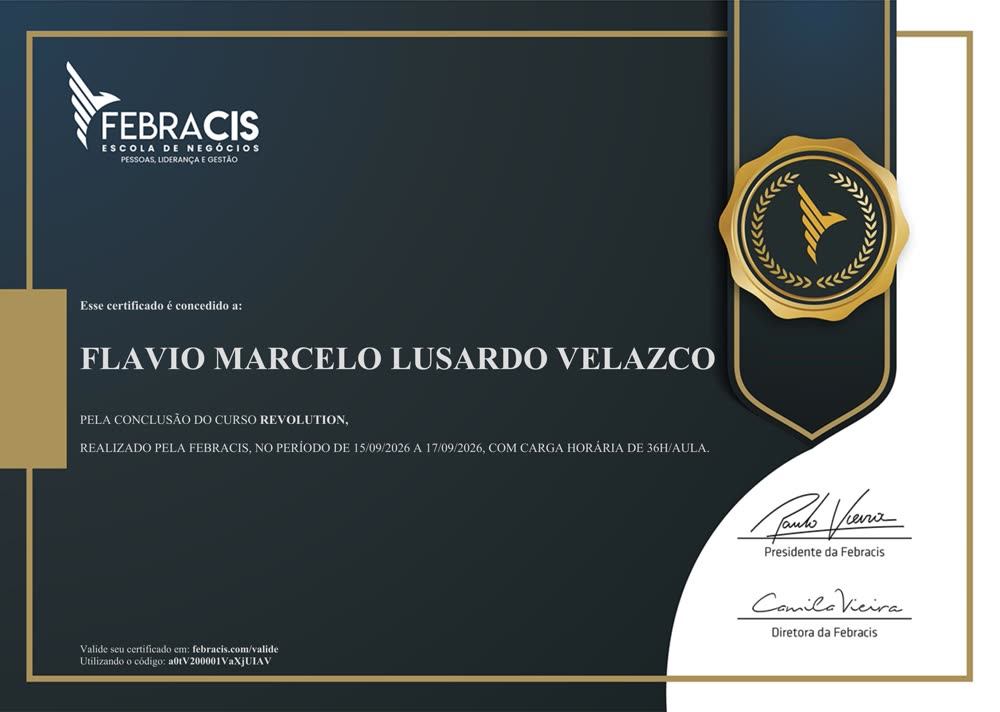
Reconhecimento
Títulos honorários em academias de letras
Em 2026, Marcelo recebeu dois títulos de academias brasileiras de artes e letras, reconhecimento ao trabalho de ligar Brasil e Austrália.
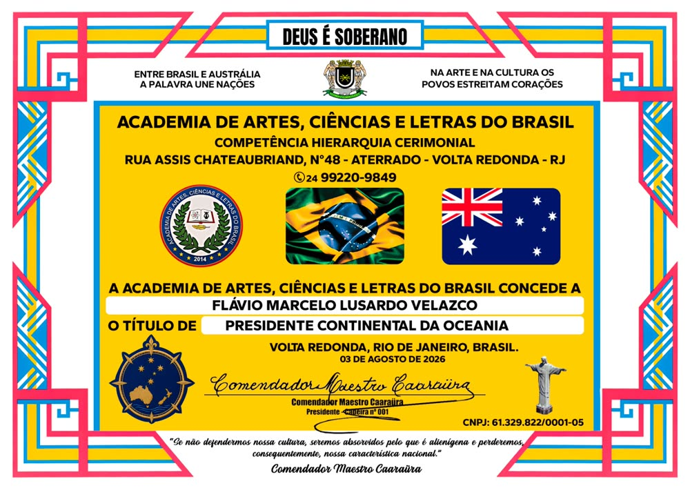
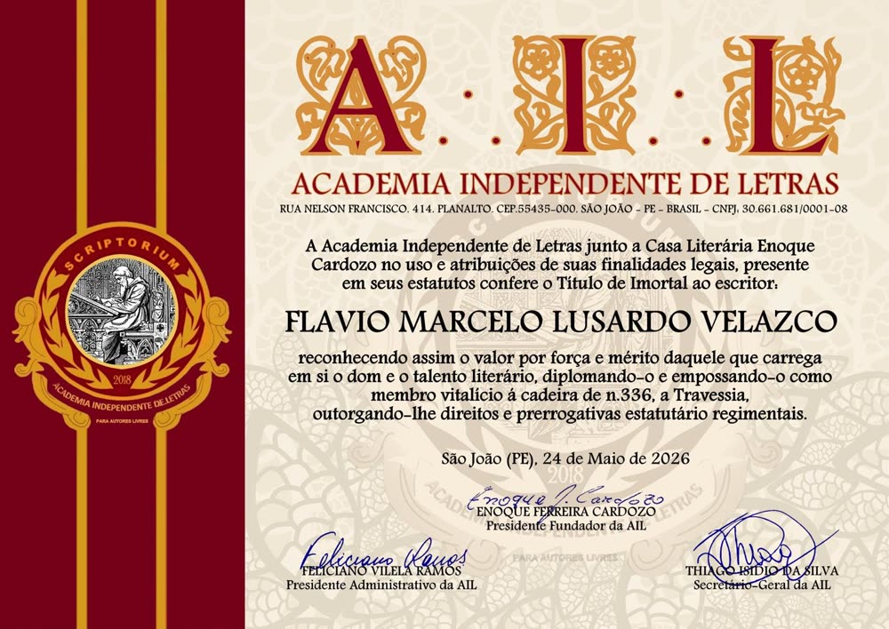
O que você recebe
Tudo o que o ecossistema inclui
Mentoria com Marcelo
Experiência real de quem construiu a própria trajetória na Austrália.
Agente de imigração
Orientação especializada pra compreender caminhos e possibilidades migratórias.
Caminho das pedras
O que preparar, quando preparar e quais decisões precisam entrar no radar.
Plano de direção
Entenda seu momento e quais próximos passos fazem sentido pro seu objetivo.
Oportunidades
Aprenda onde procurar e como se posicionar pro mercado australiano.
Networking
Conecte-se com pessoas que já estão construindo suas trajetórias no país.
Educação
Parceiros, escolas, colleges, universidades e benefícios do ecossistema.
Mentalidade
Mudar de país exige mais do que comprar uma passagem.
Onde você está hoje?
Quero ir
"Quero sair do Brasil, mas não sei por onde começar."
- Preparação
- Estudos
- Planejamento
- Primeiros passos
Já estou aqui
"Cheguei. Agora preciso construir meu próximo passo."
- Carreira
- Networking
- Renovação
- Direção
Quero ficar
"A Austrália deixou de ser uma experiência. Quero construir meu futuro aqui."
- Estratégia
- Especialistas
- Planejamento migratório
- Conexões
"Mas eu posso pesquisar tudo isso sozinho."
Pode. Você pode assistir centenas de vídeos, entrar em dezenas de grupos, pesquisar cada etapa, errar, corrigir e ir montando sua rede aos poucos, durante anos.
Dá pra fazer sozinho. Resta decidir quanto tempo você quer gastar nisso.
+131 MIL
inscritos no canal Austrália Sem Fronteiras
Anos falando com brasileiros que têm o mesmo sonho que você.
Depoimentos
Quem já topou contar como foi
 DEPOIMENTO
Depoimento de aluno
Conta em vídeo como foi passar pelo Austrália Sem Fronteiras.
DEPOIMENTO
Depoimento de aluno
Conta em vídeo como foi passar pelo Austrália Sem Fronteiras.
 DEPOIMENTO
Rodrigo
Depoimento em vídeo sobre a experiência com o Austrália Sem Fronteiras.
DEPOIMENTO
Rodrigo
Depoimento em vídeo sobre a experiência com o Austrália Sem Fronteiras.
Conexões que inspiram
Marcelo troca ideia com quem também constrói coisas grandes.
De Paulo Vieira a Joel Jota e Jacob Petry — aprendizado e rede de contatos fazem parte da jornada dele, e é isso que ele leva pro ecossistema.
Fundador da Febracis e criador do Método CIS (Coaching Integral Sistêmico). Autor de "O Poder da Ação", +1 milhão de exemplares vendidos.
Ex-nadador da seleção brasileira, mestre em Ciências do Esporte e doutor em Educação. Hoje um dos maiores especialistas em alta performance do Brasil, +6 milhões de livros vendidos.
Escritor, palestrante e empresário. Autor de best-sellers como "O Óbvio que Ignoramos" e "As 16 Leis do Sucesso", +1 milhão de livros vendidos.
Quanto custa tomar uma decisão errada em outro país?
Um curso que não fazia sentido, meses sem direção, uma oportunidade que você nem soube que existia, anos montando uma rede sozinho.
Compare com o preço de entrar já sabendo onde procurar as respostas.
AUSTRÁLIA SEM FRONTEIRAS
R$ 1.030,00
≈ 1,5 dia de trabalho na Austrália* dá acesso a todos os benefícios da plataformaAcesso anual
- ✓ Marcelo Lusardo
- ✓ Agente de imigração
- ✓ Mentorias
- ✓ Trilhas passo a passo
- ✓ Carreira
- ✓ Networking
- ✓ Mentalidade
- ✓ Comunidade
- ✓ Parceiros e benefícios
- + Bônus: livro "Austrália Sem Fronteiras" incluso
Compra segura · acesso liberado após confirmação
*Estimativa com base no salário mínimo nacional australiano (AUD 1.004,90/semana ÷ 5 dias) e cotação aproximada do dólar australiano.
Perguntas antes de decidir
Ainda estou no Brasil. Serve pra mim?
Sim. O ecossistema começa exatamente aí: preparação, estudos e planejamento antes de qualquer passagem comprada.
Já estou na Austrália. Vale a pena?
Sim. A maior parte de quem já chegou trava justamente na etapa seguinte: carreira, networking e renovação sem estratégia. É pra isso que o ecossistema também existe.
Quero residência. O ecossistema pode me ajudar?
Ele te dá direção, plano e acesso ao agente de imigração pra entender os caminhos possíveis pro seu caso. Leia a próxima resposta antes de decidir.
Existe garantia de visto ou residência?
Não. Nenhuma mentoria, curso ou agente pode garantir a concessão de um visto ou residência, pois isso depende de análise individual dos órgãos de imigração australianos. Quem afirma o contrário não está sendo honesto com você.
Vocês garantem emprego ou sponsorship?
Não. Fornecemos preparação, conhecimento e oportunidades de networking. O resultado individual depende de cada pessoa e não pode ser garantido por nós.
Quem é o agente de imigração?
Um agente de imigração registrado, parceiro do ecossistema, disponível pra orientar sobre caminhos e possibilidades migratórias dentro do programa.
Como funcionam as mentorias com Marcelo?
Encontros ao vivo dentro do ecossistema, com espaço pra tirar dúvidas reais de quem já fez essa travessia.
Por quanto tempo tenho acesso?
O acesso ao ecossistema é anual.
Daqui a alguns anos, você pode olhar pra trás e lembrar do dia em que decidiu ir.
Você pode chegar descobrindo tudo sozinho, ou com especialistas e gente que já conhece o caminho ao seu lado.
Você não precisa fazer esse caminho sozinho.
Quero começar minha jornada